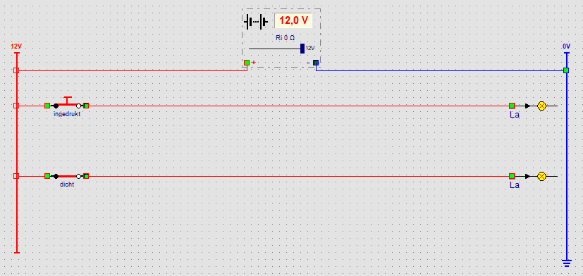

TasterSchalter
TasterSchalterLernpfad › Lektion 2 von 41

| Bauteil | Verhalten | Beispiel aus dem Alltag |
|---|---|---|
| Taster | Ein, solange Sie ihn gedrückt halten. | Türklingel, Tastatur |
| Schalter | Bleibt ein oder aus, bis Sie erneut klicken. | Lichtschalter |
Schalter und Taster sind dasselbe Bauteil mit zwei Klemmen aus der Gruppe Versorgung: Mit Rechtsklick › Art wählen Sie Schalter oder Taster (siehe Energie 3). Beide sitzen zwischen der + Schiene und der Lampe.
Welches Bauteil wählen Sie für eine Türklingel und welches für das Licht in einem Zimmer? Warum?
Eine Türklingel darf nur klingeln, solange man drückt: ein Taster. Das Licht soll anbleiben, wenn man ins Zimmer geht: ein Schalter.